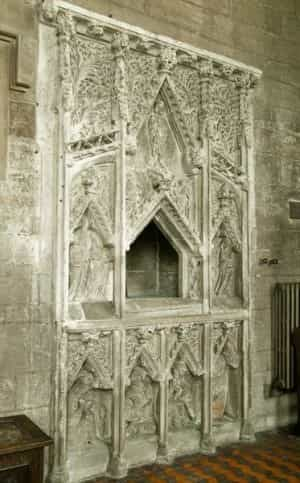
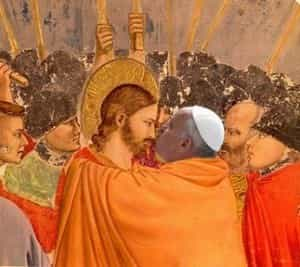
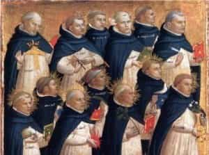
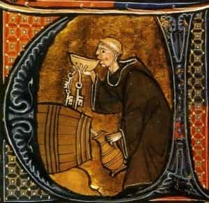
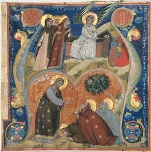

< < < Back
Surrexit Dominus Vere! Christ Is Risen! Χριστός Ἀνέστη! Христóсъ воскрéсе! – Return Of Kings
Greetings to the men of ROK in Easter Week, the most joyful week in the Christian year. I’m sorry I didn’t comment as much on my last article, but from Maundy Thursday to the Tuesday of Clean Week there is such solemnity of the services and merriment in the customs, that I didn’t have much time to comment.
After a month and an half of fasting, and of Liturgical austerity, the long journey of Lent comes to an end; I am pleased to say that, after a couple years of Easter disappointment, this year I have been able to hit my stride and recover the old joys. This has not come without a fight; no pain, no gain, nature itself teaches us. I’m moved to share some of my thoughts on this, for Western men interested in what has happened to their spiritual patrimony, as a capstone to our reflections on piety.
Over the past two years, as I was finding my home in Catholicism, my Easter customs were not as great as they had formerly been, due to the confusion and my remote location from a Mass. And, since I’m sorry to say that even the traditional Catholics often do little better than keep to Friday abstinence and Sunday Mass, often their Easter joy is little more than it would be for a Labor Day barbecue. Sadly, I find that this translates to their liturgical practice as well.
For some time, this was the only surviving doubt I had, about my decision to convert to Catholicism from the Orthodox Church. Because many Orthodox come from cultures where the customs are still intact, their liturgical ceremonies are second-nature to them, at once dignified and intimately comfortable. Easter amongst them was sublime. The total absence of this joy and freedom even in traditional Catholics’ Liturgy, sometimes made me hesitate. Close study had convinced me, intellectually, that (actual) Catholics hold to the Apostolic Faith; but only witnessing a similar loss of warmth amongst modernized Orthodox groups, helped me to shake the purely emotional and aesthetic sense that the differing confessions made all the difference.
I realized that the main factor involved, was whether the people put in their dues, to keep their customs alive and intimately familiar. As we now know, this is directly related to piety—how faithful will they be to God, and to the customs of their people, their rite? To the degree that Modernism (founded on impiety) prompts us to compromise and “tone it down,” to the same degree we lose our joy and connection to our piety.
The West will only recover this, and their intimate familiarity with the beauty of God’s household, the hard way: i.e., by piously cultivating again their rites and customs. They must approach their rites prayerfully and willingly, not regarding the chanting of the office in choir, processions, long masses, etc., as a chore, but as a great privilege. This is the genius of their ancestors, as it was moved by God; how can we be disinterested in it?
As with most things, the less we do, the less we want to do, and I see the inclination towards disinterested abbreviations and omissions even in “traditional” Catholic circles. When I was amongst the old-school Russian Orthodox, standing in church for hours, gladly, was not uncommon. With or without a priest, the office was always chanted. If the mind wandered, the eyes cast in any direction would land upon some reminder of the sacred. It takes “a lot” to keep this up; but the burden of “a lot” is quite light.
Your typical Roman Rite Church, even in traditionalist circles, however, is not paying these dues; no chanted office, a preference for low masses, omission, abbreviation or simplification of many occasional rites, processions and blessings, etc. The end result, is that even the priests are not intimately familiar with the ceremonial idiom of their own rite. Thus, when they feel obliged to perform a solemn ceremony, their stiff and affected comportment is conspicuous in many ways.
If you happen to get bored with this spectacle, their walls are white; the lights, harsh and electric; there is one statue of our lady up in the stratosphere and some mediocre stations of the cross. And by doing so much less, even our bare minimum feels like a chore. I am sorry to mention this in such a week; but I was saddened to see the parish I attended lacking the joy and freedom of the Paschal rites, which I have been pleased to keep even in my very simple chapel on the farm.

Ah, brothers, it is indeed difficult to keep the flame alive in these days, when even the traditionalists often hold to the barest forms of our civilization’s former substance! But in this Easter week, I bear witness that the substance is not gone, yet—though we do have a choice to make. Those who regard our customs and rites as a burden or chore, will keep on doing less until they lose everything. In point of fact, last week Roosh and others, asked what I thought of Francis’ activity on Maundy Thursday. I had thought of writing about it in my article last week, but I wanted to wait and see if he would actually do it.
For those who do not know, the Maundy (from Latin mandatum) is the liturgical re-enactment of Christ’s institution of the priesthood, His preparation of the Apostles for ordination, and His celebration of the first mass (i.e., the last supper) with them, when He washed their feet and said mandatum novum do vobis, ut diligatis invicem (“I give you a new commandment: that you love one another”).

It is also important to remember that, in Semitic cultures, the whole area below the waist was associated with the private parts, such that “feet,” “legs” and “thighs” are often euphemisms for the genitals. Men and women did not indiscriminately handle each other’s feet and legs. The Scriptures also record that our Lord stripped off His clothes before girding Himself with a towel for this event.
So, a) this was a masculine, fraternal event, closed to women; b) it involves the relations of masters and subjects, implying membership in the same structure; c) it is related to the ordination and communing of the Apostles in connection with our Lord’s Passion. Thus, the Maundy is restricted to men for moral reasons, and by reason of its connection to ordination. It is also restricted to Catholics, as a very solemn sacramental tied to the hierarchical ministry of the church. Francis’ act, therefore, was an act of blasphemy and impiety par excellence. Moreover, it involves a Satanic perversion of Christian sympathy with the lowly.
The Scriptures often take the side of lowly persons, because their alienation from worldly power protects their piety. But modernists’ preoccupation with the “fringes” is entirely contrary to this; it exploits convenient out-groups only to weaponize them against the very piety that the Scriptures found praiseworthy in the lowly, further solidifying the potent impiety of lofty personages. Hence all Francis’ “compassion” has the result of uprooting piety and sowing impiety. This should not surprise us, who now understand something of impiety and the Church’s Passion.

But we can choose better for ourselves, even if we have to do all the heavy lifting. Since my situation has stabilized, I have been glad to keep the customs of the Latin church even in a private capacity in my home chapel, and have found this Easter week as joyful as any I knew amongst the good-hearted Russians! My chapel is sweet, still, with the myrrh-infused holy water sprinkled everywhere on Good Friday, when I “entombed” our Lord (i.e., His crucifix) in an home-made Easter Sepulcher; it is now also redolent with the fragrance of all the roses and other flowers I brought in at His Resurrection on Easter Sunday, and with the incense that I have used at the full cycle of chanted Hours this week.

That in itself has been a great joy—after the long and austere services of Holy Week, the Tenebrae, the straight-chanted psalms without doxologies, the long hours awake and without food, the Paschal Hours now shine with special delight! I use the Dominican rite, and it shortens the services of Easter week sharply. This abbreviation does not sap the will; it produces a sense of everything being new, out of the ordinary, bright and lively. It leaves one wanting to pray and sing even more, as if the services never really end.
There are the gladsome processions out to the shrine of our Lady while the Christus Resurgens and the Regina Caeli are sung, with special prayers replacing the usual conclusion of services. My paschal candle stays lit at all times; the chapel has been cleaned and everything polished, decked out with bright hangings and flowers; we’ve been feasting on steaks and hamburgers and pascha breads, plenty of port and whisky, rum and beer!

Yes, the times are evil and many wretches go through this life without any joy; those who want something better, may God grant a light to their path; those who have said in their heart, quiescere faciamus omnes dies festos Dei a terra (“let us abolish all God’s festivals from the earth”), it would be better for them never to have been born, for the Lord will rise to judge His own cause, and will not forget the words of those, whose arrogance has continually ascended before Him. In the meantime, this is Clean Week, the Lord is risen, and I, for one, am as glad-hearted as I’ve ever been!
Surrexit Dominus Vere! Christ is risen! Χριστός Ἀνέστη! Христóсъ воскрéсе!

I leave you with some of my favourite music of Easter Week.
In honor of the Russians, who first showed Easter to me; it builds up to a thing of glory. Crank the volume.
Christus Resurgens is sung repeatedly at this time, and is my favourite… though everyone seems to sing it more sedately than I do.
The Eastertide greeting of the Virgin, Regina Caeli.
Easter Sunday has one of the few surviving medieval sequences, Victimae Paschali.
The Gradual Haec Dies first appears at Easter Sunday Mass, and is sung for the rest of the week, also replacing parts of the shortened Divine Office; it is an highly meditative chant.
The Alleluya from Easter Day’s Mass is the best of its type, another highly meditative melody. I don’t normally like women’s voices in chant, but this lady renders the melody as clear as a sunbeam.
And finally, two Easter carols, since eight is the number of Easter.
Read More: 20 Signs You’re A Slave To Modern Technology